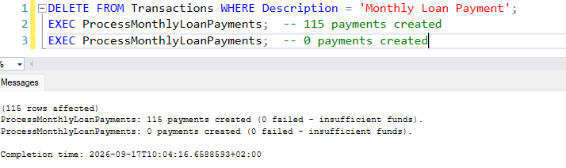
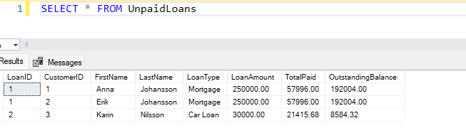
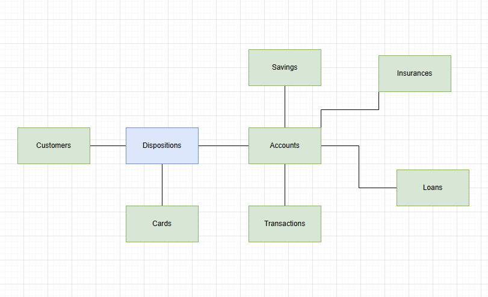
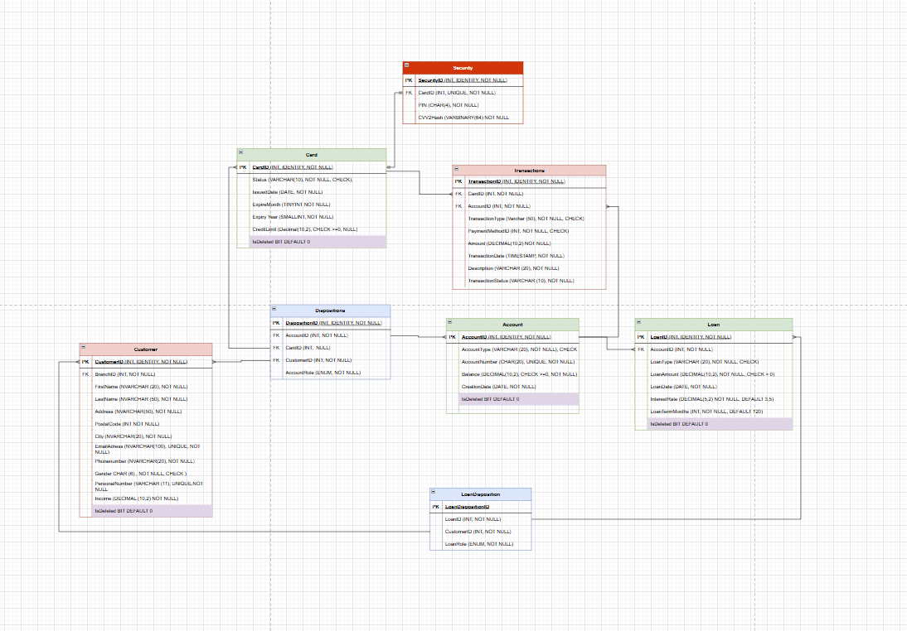

What it is
A fictional Swedish bank modeled in T-SQL (SQL Server): customers, accounts, cards, loans, access rights and transactions — with stored procedures for salary deposits, credit-checked loan approvals and monthly annuity payments.
| Script | Contents |
|---|---|
01_schema.sql | Database + all tables — PK/FK, CHECK constraints, soft delete |
02_seed.sql | Demo data: 10 customers, 30 accounts, 17 cards, 3 loans |
03_views.sql | Report views — active customers, maturing loans, outstanding debt |
04_procedures.sql | Stored procedures (see below) |
05_queries.sql | Demo executions + showcase queries — window functions, CTEs, RANK |
The interesting parts
ProcessMonthlyLoanPayments— generates annuity payments (amortization + interest) up to each loan's term. Idempotent via aNOT EXISTScheck per month, atomic viaTRAN/TRY/CATCH, and only updates balances for newly completed payments (OUTPUTclause). The screenshot below shows it: first run creates 115 payments, the re-run creates 0.GrantLoanWithTerms— approves loans after a credit check: age requirement, income requirement, max existing loans, minimum balance. Everything in one transaction; the disbursement is posted as a transaction.- Showcase queries — running balance per account (
SUM OVER ROWS UNBOUNDED PRECEDING), customer ranking by balance (RANK), monthly cash flow per account (CTE + conditional aggregation), debt-to-income ratio per borrower.
Proof it works

Idempotency in action — same procedure run twice: 115 payments created, then 0. No duplicates, ever.

UnpaidLoans view — outstanding balance per loan, straight from the report layer.

Conceptual model — the domain design before implementation.

Implemented ERD — the schema as built in SQL Server.
Run it
sqlcmd -S localhost -E -f 65001 -i 01_schema.sql … through 05_queries.sql — or run the files in order in SSMS / Azure Data Studio.
School project from the database modeling course at Nackademin (BI24). The database is fictional; all data is seeded demo data.